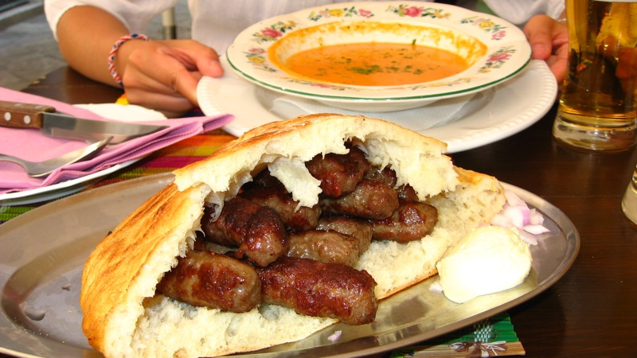

Ćevapi
GrillGrilled minced-meat sausages
Small, hand-rolled sausages of minced beef and pork, grilled over charcoal and served in warm lepinja flatbread with raw onion and creamy kajmak.
Serbian cooking draws on Balkan, Mediterranean, Turkish and Central European traditions. A typical spread starts with cured meats, cheeses and ajvar (roasted red pepper relish), then moves to the grill, and ends with something sweet from the bakery.